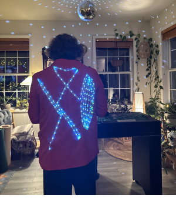

As part of the yearly Rhodos Halloween costume party, students are tasked with designing their very own costumes by utilizing the equipment available to them in the makerspace. For the 2022 year, I decided to recreate an album cover of my favorite artist - The Weeknd. The album I choose was the 2020 album titled "After Hours". On the album cover is The Weeknd dressed in a red suit, which was his signature outfit for the album. In an effort to make this costume unique from the original suit, I wanted to include led lights somehow. The idea of having lights that react to sound, such as the music of a party, on the back of my costume came to mind one day as I was listening to the album's hit single: "Blinding Lights".
Make a cheap LED suit jacket that can react to sound such as music being played at a party.
Use LED rope found on amazon accompanied by a rechargable 5V portable battery in the suit pocket.
At first, I thought to just cover the back of a red jacket with basic LEDs and control them somehow with an ardunio. Upon further thought, I realized that this design would be too cumbersome and time consuming for the closely approaching deadline of Halloween. Instead of reinventing the wheel, I decided to simply order LEDs off amazon that already reacted to sound. Now, my biggest complication involved powering these light somehow. After some research, I found a rechargeable 5V battery pack that had an adapter for the LEDs and was small enough to hide inside my suit's pocket. I organized the lights into the design of The Weeknd's record label XO and then cut a whole through the suit so that all the wires could run into my pocket and the lights could be powered.
Cheap costume that is lightweight. The battery is capable for running upwards of 5 hours straight and is simple to recharge. Has adjustable modes of lighting and a full color spectrum to choose from.